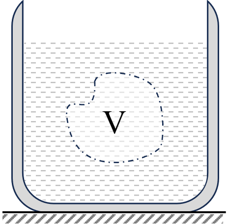
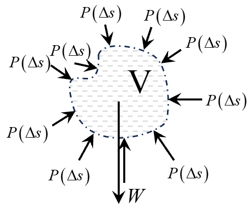
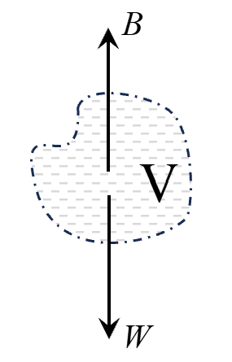
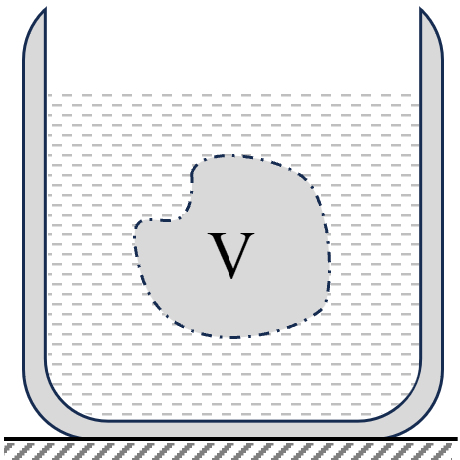
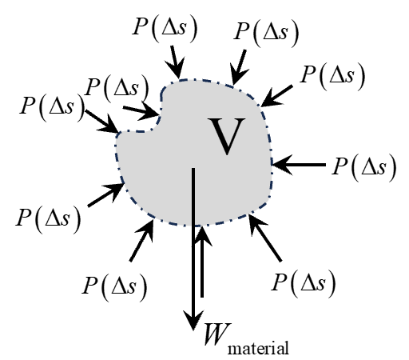
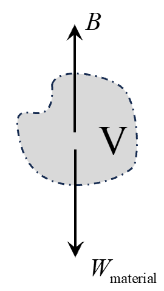
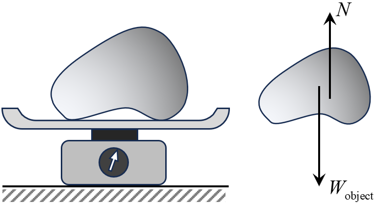
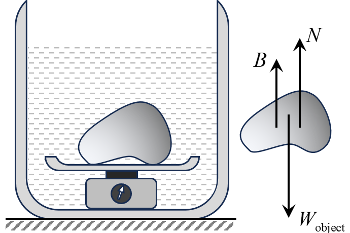
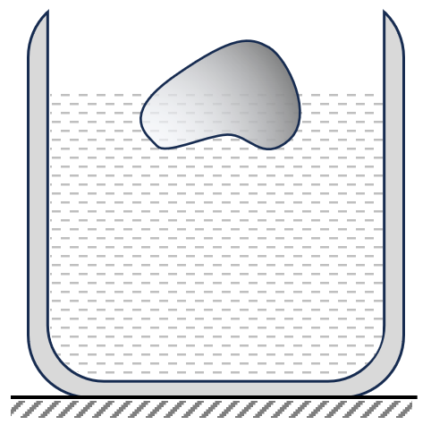
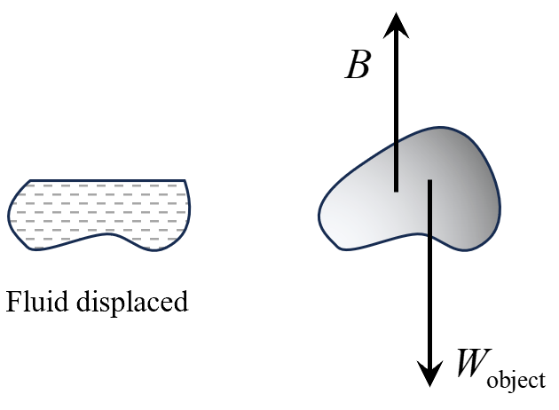

Imagine a specific volume, \( V \), within a fluid. This volume is subject to its
own gravitational pull, essentially its weight. Additionally, the surrounding fluid
exerts pressure forces on the boundaries of this volume, known as the buoyant force.
The diagrams below depict this with \(W\) representing the weight and \(B\) the
buoyant force on the fluid sample:

Fluid in a container

Forces on fluid sample

Buoyant force on fluid sample
When our chosen volume remains stable, the buoyant force cancels its weight.
Therefore, we can express this relationship as:
Now, let's think about replacing the fluid in volume \( V \) with another substance.
The surrounding fluid remains the same, and consequently, the pressure remains
consistent throughout. It implies that the pressure exerted on the replaced material
is identical to that which was exerted on the original fluid. The diagrams below
illustrate this concept:

Material placed inside fluid

Forces on material inside fluid

Buoyant force on material
The fundamental concept we just established is that the buoyant force remains
unchanged, whether the volume is occupied by the fluid or any other substance. This
understanding forms the basis of Archimedes' principle, which states:
When an object is immersed, either partially or fully, in a fluid, it experiences a
force called the buoyant force. This force is equal to the weight of the fluid
displaced by the object.
Let's take an example to understand this mathematically. Imagine an object with a
density of \(\rho_\text{object}\) and a volume of \(V\), submerged in a fluid with a
density of \(\rho_\text{fluid}\). The volume of fluid displaced by this object is
\(V\).
Thus, the weight of the displaced fluid (or buoyant force) is given by:
\(\qquad \text{Buoyant force} = \rho_\text{fluid} V g\)
While the weight of the object is:
\(\qquad \text{Weight} = \rho_\text{object} V g\)
Depending on the relative densities of the object and the fluid, the object will
either sink or float when released:
If \(\rho_\text{object} \gt \rho_\text{fluid}\), the object's weight becomes more
than the buoyant force. In such cases, the gravitational pull on the object
dominates the upward buoyant force, causing the object to sink. For instance, when
you drop a metal coin into water, it quickly sinks to the bottom. This occurs
because the density of the metal coin significantly exceeds the density of the
water, leading to a stronger gravitational force acting on the coin compared to the
buoyant force exerted by the water.
Conversely, if \(\rho_\text{object} \lt \rho_\text{fluid}\), the buoyant force
acting
on the object is stronger than its gravitational weight. This ensures the object
remains afloat. An everyday example of this phenomenon is a wooden block in
water. Wood generally has a lower density compared to water. When a wooden block
is released in water, the water exerts a buoyant force on the block that is
greater than the block's weight. As a result, the block floats on the water's
surface instead of sinking.
Archimedes' principle has several implications when objects interact with
fluids. Following are few of them described in detail:
Apparent Weight in Fluid
When an object is immersed in a fluid, it experiences a buoyant
force due to
the surrounding fluid. This upward-acting force reduces the
effective weight
of the object when measured within the fluid, resulting in the
phenomenon
often described as "apparent weightlessness".
Take an object with density \(\rho_s\) and volume \(V\), placed on a
weighing scale in a vacuum (no surrounding fluid). The scale's
reading
reflects the true weight of the object, as depicted below:

Weighing an object in vacuum
True weight of the object: \(\qquad W_\text{true} =
W_\text{object}\)
When the object is fully submerged in a fluid with density
\(\rho_f\), it
displaces an equivalent volume of fluid. By Archimedes' principle,
the
buoyant force exerted on the object equals the weight of the
displaced
fluid. The situation is illustrated below:

Weighing object inside fluid
The weight measured within the fluid (apparent weight) is reduced by
the
buoyant force:
\(\qquad W_\text{apparent} = W_\text{true} - \rho_f V g\)
Rearranging and expressing in terms of relative density \(s =
\frac{\rho_s}{\rho_f}\):
It's important to note that for these equations to be valid, the
object's
density \(\rho_s\) must exceed the fluid's density \(\rho_f\). This
ensures
the object doesn't float and the apparent weight remains
non-negative.
Floatation
Floatation is a phenomenon in which an object remains partially or
fully submerged in a fluid without sinking. The ability of an object
to float is dependent on the balance between the weight of the
object and the buoyant force exerted by the fluid.
Consider an object of density \( \rho_{\text{object}} \) and volume
\( V \) which is floating in a fluid of density \(
\rho_{\text{fluid}} \). Let's denote the fraction of the
object's volume submerged in the fluid as \( f \). Therefore, the
volume of the fluid displaced by the object is \( f \times V \).
This is shown below:

Diagram: Floating body
in equilibrium.

Diagram: FBD of floating
body.
The buoyant force exerted by the fluid on the submerged portion of
the object is given by:
\(\qquad \text{Buoyant force} = \rho_{\text{fluid}} \left( f \times
V\right) g \)
For the object to be in equilibrium (neither sinking nor rising),
the buoyant force must balance the weight of the object. The weight
of the object is \( \rho_{\text{object}} \times V \times g \).
Setting the two forces equal for equilibrium:
\(\qquad \rho_{\text{fluid}} \times f \times V \times g =
\rho_{\text{object}} \times V \times g \)
\(\Rightarrow\quad f =
\frac{\rho_{\text{object}}}{\rho_{\text{fluid}}} \)
From this equation:
If \( \rho_{\text{object}} >
\rho_{\text{fluid}} \), \( f \)
will be greater than 1, indicating that the object will sink as
it cannot displace enough fluid to balance its weight.
If \( \rho_{\text{object}} =
\rho_{\text{fluid}} \), \( f \)
will be 1, meaning the object will be completely submerged but
will not sink.
If \( \rho_{\text{object}} < \rho_{\text{fluid}}
\), \( f \) will be less than 1, showing that only a fraction of the
object will be submerged, and the object will float.
For example, a wooden block in water might have a fraction \( f \) much less
than 1,
indicating that a significant portion of the block remains above water when
it
floats. The specific density of ice is roughly considered 0.9. So, about 90%
of ice
will remain submerged in water, if the ice is allowed to float freely in
water.